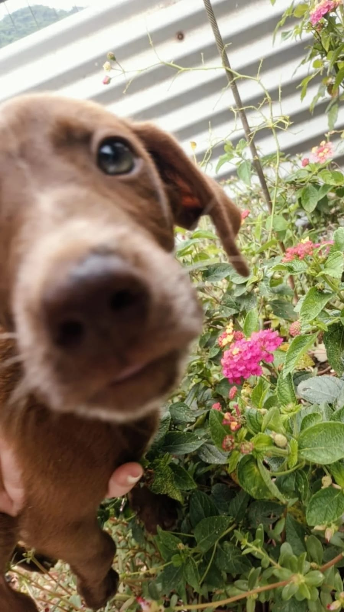

Sobre
Adoção
Contato
Doar
Doar
Faça sua doação para ajudar o lar da Silvana!
larsilvanablumenau
Copiar
Vakinha
Doar
Apoia-Se
Doar
Obrigado
Queremos expressar nossa profunda gratidão pela sua generosa doação. Com seu apoio, podemos continuar nossa missão de cuidar e encontrar lares amorosos para os cãezinhos resgatados. Obrigado por fazerem parte dessa jornada conosco.
Fechar
Lar Silvana
No Lar Silvana, nossa missão é simples: promover o amor e o bem-estar dos nossos amigos de quatro patas. Somos uma instituição dedicada ao resgate, cuidado e adoção de cães abandonados e maltratados. Fundado com paixão e compromisso, nosso lar é um refúgio para aqueles que precisam de uma segunda chance.
Guiados pela crença de que todo cachorro merece um lar amoroso e uma família para chamá-lo de seu, trabalhamos incansavelmente para proporcionar o melhor cuidado possível a cada um dos nossos residentes peludos. Desde cãezinhos jovens até os mais idosos, cada um deles tem uma história para contar e um coração cheio de amor para compartilhar.
Sobre Nós
Em 2013, Silvana, uma apaixonada por cães, abriu o "Lar da Silvana", um refúgio para cães abandonados. Com amor e dedicação, ela transformou sua casa em um lar acolhedor para cachorros desamparados da cidade. Ao longo dos anos, o lar cresceu, ganhando o carinho da comunidade e voluntários que se uniram à causa. Cada cãozinho recebia cuidados médicos, amor e a chance de encontrar um novo lar. As histórias de superação e amizade entre humanos e cães se tornaram lendárias na região. Em 2024, o "Lar da Silvana" continuava sua missão, espalhando alegria e esperança para todos os animais que passavam por lá.
Fundação
Iniciativa inspirada por amantes de cães dedicados.
Expansão
De um pequeno esforço voluntário a um refúgio estabelecido.
Impacto
Transformando vidas de cães abandonados e encontrando lares amorosos.
Compromisso
Renovando a missão de oferecer uma segunda chance a cada cão desamparado.
Silvana
Ceo
Fundadora
História
Lar Da Silvana
Eu sou a
Silvana
e sou fundadora e responsável pelo Lar Silvana, uma entidade sem fins lucrativos, com sede em Blumenau/SC, que tem como objetivo acolher animais em situação de perigo e abandonados nas ruas da cidade. Nos últimos 11 anos, que é o período que nosso lar existe, já passaram por aqui mais de
5.000
cachorrinhos que foram acolhidos, tratados, alimentados, vacinados, castrados, amados e encaminhados para bons lares, depois de terem sido, muitas vezes, maltratados e terem morado na rua. Nós, do Lar Silvana, lutamos junto à causa animal da cidade, para ajudar o máximo possível nossos amiguinhos que precisam. É uma jornada gratificante, mas muito dura e cheia de barreiras. Precisamos manter toda uma estrutura para acolher os cachorrinhos, para dar todo o suporte necessário. Mas para que isso possa acontecer, precisamos sempre levantar doações e fundos para as ações. Em média, passam por mês no meu lar
mais de cinquenta animais
, que muitas vezes
passam por veterinários, são castrados, vacinados e precisam se alimentar
. Os custos são altos e, para continuar com meu trabalho ajudando nossos amiguinhos de quatro patas, eu preciso de ajuda para custear a acessória que damos a eles, e espero contar com a sua ajuda. Você poderia ajudar a nossa causa? Toda a ajuda é bem-vinda!
Já Adotados
Alguns de nossos animais já adotados

Rocky
Vasco
Precioso
5000
Animais Adotados
Adote Já
Adotar um cachorro ou um gato pode trazer muitos benefícios à vida de uma pessoa. Além de serem ótimas companhias, os animais de estimação ajudam a combater a solidão e o estresse, promovem a prática de atividades físicas e ensinam
responsabilidade
e
cuidado
com outros seres vivos.
Interessado?
Temos vários Animais esperando por voce!
Adotar